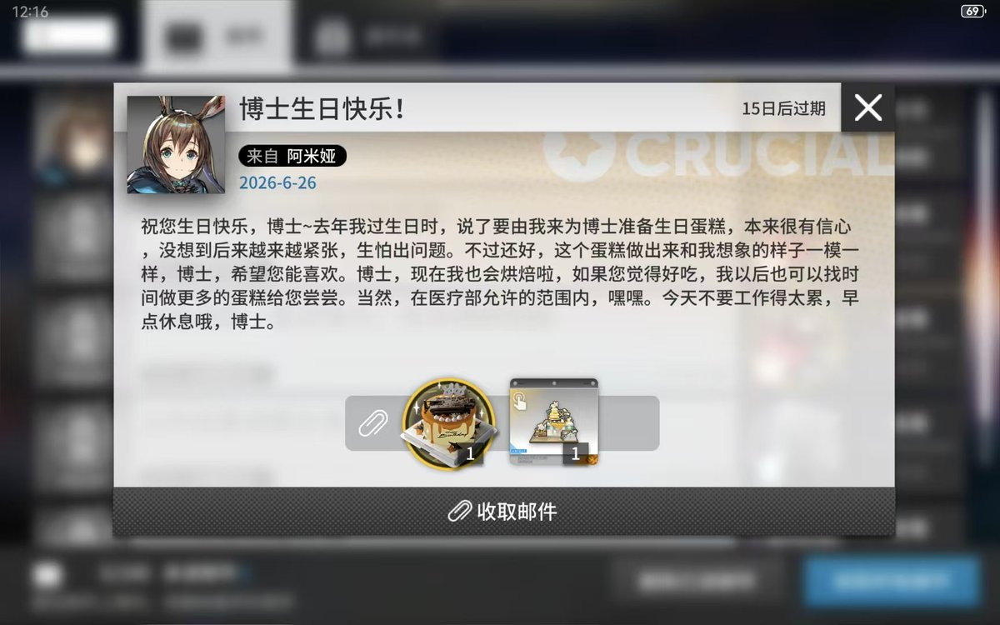

冰美式大王
@xiaoruo_OvO
@jom123ab 生日快乐！

Jom
@jom123ab
今天是我的生日，我21岁啦!
这几天我真的特别高兴，有很多人点赞了我，甚至关注了我，真的非常感谢你们。
我在生活和学习中只是普通的npc，但是在这里，我真的得到了很多宝贵的朋友和祝福。我今年的愿望是:祝你们所有人天天开心!!!!!
写着写着好像也哭了。不好意思啊，虽然我是男生，但是我总是这样。 https://t.co/l41PH8Sl1n